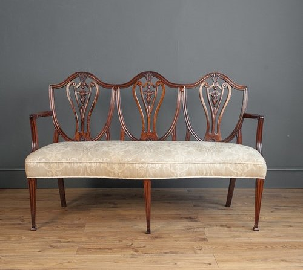

A Evolução dos Sofás
Você já parou para pensar por que os sofás são designados da forma que são? Como ele chegou a esse estado final? Essa peça é tão cotidiana que já nos acostumamos com ela, mas é interessante ver a forma que ela foi se desenvolvendo com o tempo.
10000 a.C: Assento Pré-Histórico
Pedras, troncos de madeira ou pele de animais.
3000 a.C - 200 a.C: Assento Ancestral
Os primeiros descendentes dos sofás modernos, eram longos, como um récamier, feitos de madeira e eram reclinados. Reservados exclusivamente para aqueles no topo da hierarquia da época.

1000 - 1500 d.C: Simplicidade Medieval
A evolução dos mobílias teve uma interrupção durante a Era Medieval, então tudo era extremamente simples. Os sofás dessa época eram, basicamente, tábuas de madeiras, ocasionalmente revestidas com pele de animais para servir como assento. Durante o renascimento Italiano, encostamentos e braços foram desenvolvidos e herdados pelo século seguinte.

1600 - 1700 d.C: Início da Aprimoração
Após a Era Medieval, os móveis começaram a evoluir novamente, juntamente com seus tamanhos, isso para que os vestidos longos e grandiosos das mulheres da época coubessem nele. O sofá dessa época possui 6 pernas, são basicamente duas cadeiras grudadas. Os sofás que coubessem mais do que duas pessoas eram chamados de namoradeiras. O conforto também cresceu, assim que cabelo de cavalo e musgo marinho passou a ser usado nos estofados. Uma característica dos sofás dessa época é que os seus encostos geralmente tinham o formato de escudos.
1800 d.C: Era Vitoriana
Conhecida por elaborar mais o trabalho artesanal e os estofados. Os sofás da época eram feitos com materiais luxuosos, como seda, linho, arabesco, lã e couro, comumente usados com técnicas de tufting com botões, o que tornou tais técnicas populares. As molas também se tornaram uma tecnologia extra nos assentos. Com a Revolução Industrial, os sofás foram se tornando mais acessíveis para a classe-média, deixando de ser excluisivo da nobreza.
1900 d.C: Era da Modernização
A fusão do design simples com funcionalidade. Os sofás passam a ser produzidos em massa, possuindo agora linhas mais limpas e fortes, com cores sólidas.

2000 d.C - Atualmente: Contemporâneo Moderno
Apesar de ser comum de ver sofás reproduzindo estilos antigos, como os da Era Vitoriana, os sofás modernos continuam sendo caracterizados com um visual contemporâneo.